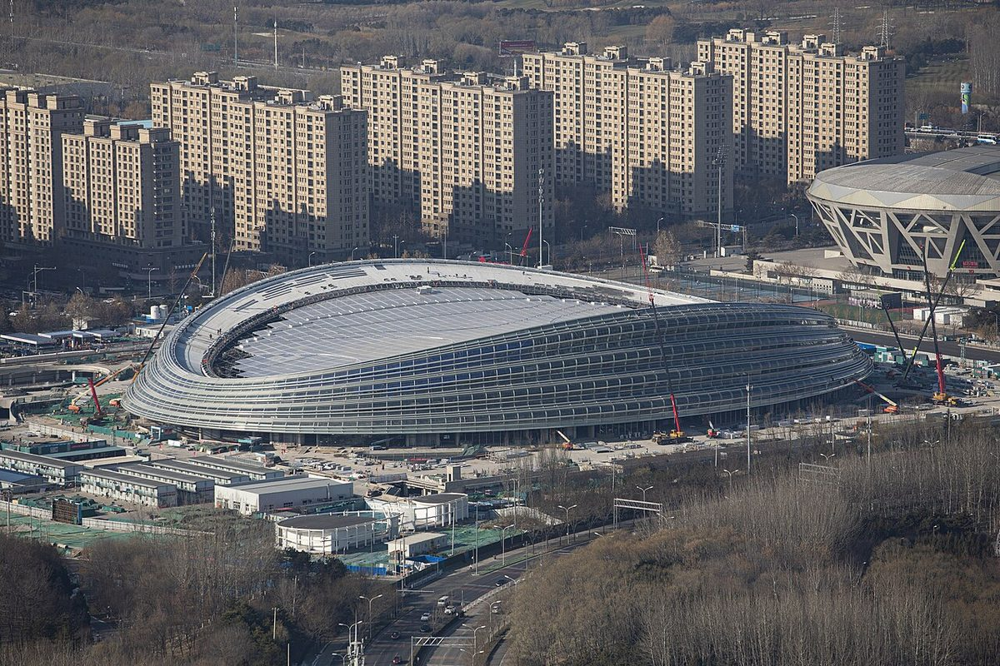

速滑世界杯北京站：中国队斩获四金 宁忠岩、廉子文、高亭宇先后夺冠
宁忠岩以打破场地纪录的成绩赢得男子1000米，并在1500米再夺一金；廉子文和高亭宇在“冰丝带”各赢一场500米。

发生了什么
2026年11月13日至15日，国际滑联速度滑冰世界杯北京站在国家速滑馆举行，中国队在男子短距离和中距离项目中拿下四枚金牌。这是新赛季世界杯的首站比赛。
宁忠岩独得两金。首日比赛，他以1分07秒43夺得男子1000米冠军，并打破“冰丝带”的场地纪录。据中新网报道，周六他又以1分43秒64赢得男子1500米。

另外两枚金牌来自进行两次的男子500米。廉子文在周六的第一次比赛中以34秒64夺冠，这是他个人首个世界杯分站赛冠军。荷兰选手斯特凡·韦斯滕布鲁克以34秒71获得第二，该项目2022年冬奥会冠军高亭宇以34秒80排名第三。
周日名次发生变化。据新浪报道，高亭宇在第二次比赛中以34秒61夺冠，廉子文以34秒77获得亚军。两人在最后一组同组出发。
其他成绩
廉子文还在首日的1000米比赛中获得铜牌。周六的女子1500米，韩梅获得第三名，挪威选手朗妮·维克隆德和荷兰选手乔伊·伯纳分获冠亚军。女子500米第一次比赛，荷兰选手包揽前三名，中国选手田芮宁排名第五。

关键数据
- 男子1000米（11月13日）： 宁忠岩1分07秒43，破场地纪录；廉子文第三。
- 男子1500米（11月14日）： 宁忠岩1分43秒64。
- 男子500米第一次（11月14日）： 廉子文34秒64，韦斯滕布鲁克34秒71，高亭宇34秒80。
- 男子500米第二次（11月15日）： 高亭宇34秒61，廉子文34秒77。
- 女子1500米（11月14日）： 韩梅第三。
- 中国队在上述项目中的奖牌： 四金一银三铜。
最后一个比赛日还进行了团体追逐和集体出发项目，本文未涉及这些项目的成绩。